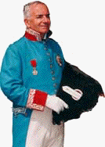

<html>

<head>
<meta http-equiv="Content-Language" content="en-us">
<LINK rel="shortcut icon" href="http://www.rotaryfirst100.org/images/favico.ico" type="image/x-icon">
<LINK rel="shortcut icon" href="http://www.rotaryfirst100.org/images/favico.ico" type="image/x-icon">
<meta name="GENERATOR" content="Microsoft FrontPage 12.0">
<meta name="ProgId" content="FrontPage.Editor.Document">
<title>Introduction à l’Histoire</title><META NAME="description" CONTENT="Rotary Global History from the birth of the founder of Rotary, Paul Harris, to present day. ROTARY GLOBAL HISTORY FELLOWSHIP (An Internet Project)  
RGHF with over 25,000 researched articles and books of the Global History of Rotary.">

<META NAME="keywords" CONTENT="Rotary Global History Fellowship , Membership covers the globe , historians , Rotarians , International Fellowship , public relations , rotary history , history , newsletter , rotary international , rotary engine , paul harris , rotary club , rotary club international , famous , foundation rotary , women , conventions , tolerance , rotary clubs , Africa , Australia , brisbane , melbourne , sydney  , New Zealand , South America , Europe , Ireland , england , germany , rotary , history  , paul harris , asia , china , japan , paris , tokyo , london , fellowship , meetings">
<meta content="The early history of Rotary. 1,200 pages with great navigation. The world's largest source of researched Rotary
history on the internet" name="Description">
<style>
<!--
TABLE.ProductsTbl{background-color:white;}
TABLE.ProductsTbl{border:0px none;}
TABLE.ProductsTbl{padding:5;}
FONT.ProductNameFont{color:black;}
FONT.ProductNameFont{FONT-FAMILY:Arial,Helvetica,sans-serif;}
FONT.ProductNameFont{FONT-SIZE:13px;}
FONT.ProductNameFont{FONT-WEIGHT:bold;}
FONT.ProductNameFont{TEXT-DECORATION:none;}
a.ProductBodyLink{text-decoration:underline}
a.ProductBodyLink{CURSOR:hand;}
.almost_half_cell{max-width:400;width:49%}
.style94 {
	text-decoration: none;
	font-size: 10pt;
	font-family: Arial;
	color: Black;
	font-weight: bold;
}
.style103 {
	text-decoration: none;
	font-size: 10pt;
	font-family: Arial;
	color: Black;
	font-weight: bold;
	text-align: center;
}
.style105 {
	color: black;
	text-decoration: none;
	font-size: 10pt;
	font-family: Arial;
	font-weight: normal;
	margin-top: -1px;
	margin-bottom: -1px;
}
.style106 {
	margin-top: -1px;
	margin-bottom: -1px;
}
.style102 {
	margin-left: 4px;
	margin-right: 4px;
}
.style104 {
	border-width: 0px;
	margin-left: 4px;
	margin-right: 4px;
}
.style91{
	color: black;
	text-decoration: none;
	font-size: 10pt;
	font-family: Arial;
	font-weight: normal;
}
-->
</style>
<meta name="Microsoft Theme" content="none, default">
<meta name="Microsoft Border" content="none">
</head>

<body>
<center>
<!--webbot bot="Include" U-Include="../_include/top.htm" TAG="BODY" startspan -->

<div align="center">

<table border="0" width="900" height="116" cellpadding="0" cellspacing="0" id="table1">
  <tr>
    <td style="width: 753; height: 91;">
	<a title="RGHF Home" href="http://www.rotaryglobalhistoryfellowship.org">
	</a></td>
  </tr>
  </table>
  <table border="0" width="900" cellpadding="3" id="table2">
    
    <!-- AddThis Button BEGIN -->
<div class="addthis_toolbox addthis_floating_style addthis_32x32_style" style="right:50px;top:50px;">
<a class="addthis_button_preferred_1"></a>
<a class="addthis_button_preferred_2"></a>
<a class="addthis_button_preferred_3"></a>
<a class="addthis_button_preferred_4"></a>
<a class="addthis_button_compact"></a>
</div>
<script type="text/javascript">var addthis_config = {"data_track_addressbar":true};</script>
<script type="text/javascript" src="http://s7.addthis.com/js/300/addthis_widget.js#pubid=ra-52e676066f8f7d83"></script>
<!-- AddThis Button END -->


  <tr>
    <td width="0" style="width: 120; height: 5px;" class="style8">
	<a style="text-decoration: none" href="http://www.rotaryglobalhistoryfellowship.org"><font face="Arial" size="1" color="red">HOME</font></a></td>
    <td width="0" style="width: 120; height: 5px;" class="style7">
  
	<a href="http://www.regionalhistory.org/" style="text-decoration: none">
<b><font face="Arial" size="1" color="black">GLOBAL</font></b></span></a></font></span></td>
    <td width="0" style="width: 120; height: 5px;" class="style8">
      <a href="http://www.districthistory.org" style="text-decoration: none">
 	  <font face="Arial" size="1" color="black">DISTRICTS</font></a></td>
    <td width="0" style="width: 120; height: 5px;" class="style8">
	<a href="http://www.clubhistory.org" style="text-decoration: none">
	<font face="Arial" size="1" color="black">CLUBS</font></a></td>
    <td width="0" style="width: 167; height: 5px;" class="style8">
 

	<a href="http://www.missinghistory.org" style="text-decoration: none">
	<font face="Arial" size="1" color="black">MISSING HISTORIES</font></a></td>
    <td width="0" style="width: 120; height: 5px;" class="style8">
	<a href="http://www.whatpaulharriswrote.org" style="text-decoration: none">
	<font face="Arial" size="1" color="black">PAUL HARRIS</font></a></td>
    <td width="0" style="width: 120; height: 5px;" class="style8">


	<strong>
  
	<a href="http://www.peacehistory.org"style="text-decoration: none"><font face="Arial" size="1" color="black">
	PEACE</span></a></td>
            
  <tr>
    <td width="0" style="width: 120; " class="style8">
	<a href="http://www.presidentshistories.org" style="text-decoration: none">
	<font face="Arial" size="1" color="black">PRESIDENTS</font></a></td>
    <td width="0" style="width: 120; " class="style8">
  
	<a href="http://www.conventionhistory.org" style="text-decoration: none">
	<font face="Arial" size="1" color="black">CONVENTIONS</font></a></td>
    <td width="0" style="width: 120; " class="style8">
  
	<a href="http://www.historylibrary.org" style="text-decoration: none">
	<font face="Arial" size="1" color="black"><strong>POST YOUR HISTORY</strong></font></a></td>
    <td width="0" style="width: 120; " class="style8">
  
	<a class="style3" href="http://www.jeanharris.org" style="text-decoration: none">
	<font face="Arial" size="1" color="black">WOMEN</span></a></td>
    <td width="0" style="width: 167; " class="style8">
 

	<a href="http://www.foundationhistory.org" style="text-decoration: none">
	<font face="Arial" size="1" color="black">FOUNDATION</font></a></td>
    <td width="0" style="width: 120; " class="style8">
	<a href="http://www.historycomment.org" style="text-decoration: none">
	<font face="Arial" size="1" color="black">COMMENTS</font></a></td>
    <td width="0" style="width: 120; " class="style7">


	<a href="http://www.historyphilosophy.org" style="text-decoration: none">
	<font face="Arial" size="1" color="black"><strong>PHILOSOPHY</strong></font></a></td>
            
  <tr>
    <td width="0" style="width: 120; height: 5px;" class="style8">
  
 	<a href="http://www.historysearch.org" style="text-decoration: none">
	<font face="Arial" size="1" color="black">SEARCH</font></a></td>
    <td width="0" style="width: 120; height: 5px;" class="style8">
  

	<font face="Arial" color="black">
	<strong>
	<a style="text-decoration: none" target="_blank" href="http://www.historyfeatures.org">
	<font face="Arial" size="1" color="black">SUBSCRIPTIONS</font></a></td>
    <td width="0" style="width: 120; height: 5px;" class="style8">
  
 	<strong>
	<font face="Arial" color="black">
	<a href="http://www.historyfan.org" style="text-decoration: none" target="_blank">
	<font face="Arial" size="1" color="black">FACEBOOK</font></a></td>
    <td width="0" style="width: 120; height: 5px;" class="style8">
  
 	<strong><a href="http://www.joinrghf.org" style="text-decoration: none">
	<font face="Arial" size="1" color="black">JOIN RGHF</span></font></a></td>
    <td width="0" style="width: 167; height: 5px;" class="style8">
 

  	<a style="text-decoration: none" href="http://www.historyfellowship.org/explore.php">
	<font face="Arial" size="1" color="black">EXPLORE RGHF</font></a></td>
    <td width="0" style="width: 120; height: 5px;" class="style8">
  
 	<a style="text-decoration: none" href="http://www.historyfellowship.org/viewpage.php?page_id=11">
	<font face="Arial" size="1" color="black">RGHF QUIZ</font></a></td>
    <td width="0" style="width: 120; height: 5px;" class="style7">


      <font face="Arial" color="black">
	  <a style="text-decoration: none" href="http://www.historyfellowship.org/viewpage.php?page_id=2">
	  <font face="Arial" size="1" color="black">RGHF MISSION</span></font></a></td>
        

  	
    
  
  <tr><center>
		</div>
				
  	<!--webbot bot="Include" i-checksum="3449" endspan --><table border="0" cellspacing="1" cellpadding="3" bgcolor="#FFCC66" height="1" style="width: 900"></center>
    <tr align="center"> 
      <td align="left" valign="top" bgcolor="#FFFFFF" height="1" colspan="2">
		<p align="center">
		<!--webbot bot="Navigation" S-Type="banner" S-Orientation="horizontal" S-Rendering="graphics" startspan --><!--webbot bot="Navigation" i-checksum="0" endspan --></td>
    </tr>
    <tr align="center"> 
      <td align="left" valign="top" bgcolor="#FFFFFF" height="1" colspan="2">
      <blockquote>
      <style="font-size: 9pt">
	<p style="margin-left:0in; margin-right:0in; margin-top:0in; margin-bottom:0pt" align="left">
	<b><font face="Georgia" size="4" color="#800000">
	TRANSLATIONS </font>
	<font face="Georgia" size="2" color="#800000">
	<a href="http://www.historytranslation.org">
	www.historytranslation.org</a></font><font face="Georgia" size="4" color="#800000">
	</font><font face="Georgia" size="2">
	(and every page of RGHF can be translated, using the Google Tool above. Once you translate this 
	page, every page there after will be translated)</font></b></p>
		<p align="left" style="margin-top: -1px; margin-bottom: -1px"><b>
		<a href="/first100/chinese/index.htm"><font size="2">Chinese,</font></a><font size="2">&nbsp;French,
		<a href="http://www.rotaryfirst100.org/geschichtevonrotary/index.htm">German,</a>
		<a href="http://www.archivohistoricoderotary.org">Spanish,</a>
		<a href="../global/countries/sweden/100years.htm">Swedish,</a>
		<a href="http://www.rotaryfirst100.org/presidents/themes/index.htm">
		Presidents' themes in multiple languages,</a>
		<a href="http://www.rotaryhistoryfellowship.org/rghf/about.htm">The history of RGHF in multiple 
		languages,</a>
		<a href="http://www.districthistory.org">District Histories in multiple languages,</a>
		<a href="../global/countries/index.htm">First Clubs of Countries in multiple languages,</a>
		<a href="../global/regions/index.htm">Regional histories in multiple languages</a></font></b></p>
    	</blockquote>
		</td>
    </tr>
    <tr align="center"> 
      <td align="left" valign="top" bgcolor="#FFFFFF" height="248" style="width: 72px">
      <table width="140" border="0" cellspacing="1" cellpadding="4" bgcolor="#000000">
          <tr bgcolor="#F7F7F7" align="left"> 
            <td bgcolor="#000080" width="130">
            <p align="center">
            <b><span lang="FR" style="font-family: Arial">
      <a style="text-decoration: none" href="http://www.rotaryfirst100.org/history/history/index.htm">
      <font color="#FFFF00" size="2">Histoire générale</font></a></span></b></td>
          </tr>
          <tr bgcolor="#F7F7F7" align="left"> 
            <td bgcolor="#000080" width="130">
            <p align="center"><b>
            <span lang="FR" style="font-family: Arial">
     <a style="text-decoration: none" href="http://www.rotaryfirst100.org/history/headings/tenets.htm">
     <font color="#FFFF00" size="2">Doctrine et symboles</font></a></span></b></td>
          </tr>
          <tr>
            <td bgcolor="#000080" width="130">
            <p align="center">
            <b><span lang="FR" style="font-family: Arial">
     <a style="text-decoration: none"  href="http://www.rotaryfirst100.org/secretariat/history.htm">
            <font color="#FFFF00" size="2">le secrétariat</font></a></span></b></td>
          </tr>
          <tr>
            <td bgcolor="#000080" style="font-size: 10pt; font-weight: bold" width="130">
            <p align="center"><b>
            <span lang="FR" style="font-family: Arial">
            <a style="text-decoration: none" href="http://www.rotaryfirst100.org/history/headings/tools.htm">
            <font color="#FFFF00" size="2">Les outils d’&nbsp; Histoire du Rotary (et du 
            Rotary)</font></a></span></b></td>
          </tr>
          <tr>
            <td bgcolor="#000080" align="center" width="130"><b>
            <span lang="FR" style="font-family: Arial">
            <a style="text-decoration: none" href="http://www.rotaryfirst100.org/leaders">
            <font color="#FFFF00" size="2">Les dirigeants rotariens récents</font></a></span></b></td>
          </tr>
          <tr>
            <td bgcolor="#000080" align="center" width="130"><b>
            <span lang="FR" style="font-family: Arial">
            <a style="text-decoration: none" href="http://www.rotaryfirst100.org/history/headings/evolution.htm">
            <font color="#FFFF00" size="2">L’évolution du Rotary</font></a></span></b></td>
          </tr>
          <tr>
            <td bgcolor="#000080" align="center" width="130">
            <font color="#FFFF00"><b>
            <span lang="FR" style="font-family: Arial">
            <a style="text-decoration: none" href="http://www.rotaryfirst100.org/philosophy/philosophy.htm">
            <font color="#FFFF00" size="2">La philosophie du Rotary</font></a></span></b></font></td>
          </tr>
          <tr>
            <td bgcolor="#000080" align="center" width="130">
            <a style="text-decoration: none" href="http://www.rotaryfirst100.org/history/headings/project.htm">
            <b><font face="Arial" size="2" color="#FFFF00">Rotary Global History</font></b></a>
            <span lang="FR" style="font-family: Arial"><b><font color="#FFFF00" size="2">
            <a style="text-decoration: none" href="http://www.rotaryfirst100.org/history/headings/project.htm">
            <font color="#FFFF00">&nbsp;:&nbsp;
            Pourquoi cette «&nbsp;Histoire du Rotary.&nbsp;»</font></a></font></b></span></td>
          </tr>
          <tr>
            <td bgcolor="#000080" align="center" width="130">
            <p style="margin-top: -1; margin-bottom: -1"><b>
            <font color="#FFFF00" size="2">
            <span lang="FR" style="font-family: Arial">
            Adhésions, fonctionnement, publications…</span></font>
            <span lang="FR" style="font-family: Arial"><font color="#FFFF00" size="2">(en construction)
            </font></span></b></p>
            </td>
          </tr>
          <tr>
            <td bgcolor="#000080" align="center" width="130"><b>
            <font color="#FFFF00" size="2">
            <span lang="FR" style="font-family: Arial">Les récompenses du rotary </span></font>
            <span lang="FR" style="font-family: Arial">
            <font color="#FFFF00" size="2">(en construction)</font></span></b></td>
          </tr>
          <tr>
            <td bgcolor="#000080" align="center" width="130"><b>
            <span lang="FR" style="font-family: Arial; color: #FFFF00">
     <a  style="text-decoration: none" href="http://www.rotaryfirst100.org/history/headings/world.htm">
            <style="font-size: 9pt" color="#FFFF00">
			<font size="2" color="#FFFF00">Les grands dirigeants dans le monde</font></a><font size="2">
			<style="font-size: 9pt">
            </font>
            </span></b></font>
			</font></td>
          </tr>
          <tr>
            <td style="font-size: 10pt; font-weight: bold" bgcolor="#000080" align="center" width="130">
			<font color="#FFFF00"><b>
            <span lang="FR" style="font-family: Arial">
            <a style="text-decoration: none" href="http://www.rotaryfirst100.org/history/famous">
            <font color="#FFFF00" size="2">Les rotariens célèbres</font></a></span></b></font></td>
          </tr>
          <tr>
            <td bgcolor="#000080" align="center" width="130">
            <p class="MsoPlainText" style="margin-top: -1; margin-bottom: -1">
            <b><span lang="FR" style="font-family: Arial">
            <a style="text-decoration: none" href="http://www.rotaryfirst100.org/history/headings/world.htm">
            <font color="#FFFF00" size="2">Ce que le Monde pense du rotary</font></a></span></b></td>
          </tr>
          <tr>
            <td bgcolor="#000080" style="font-size: 10pt; font-weight: bold" align="center" width="130">
			<b><span lang="FR" style="font-family: Arial">
            <a style="text-decoration: none" href="http://www.rotaryfirst100.org/history/history/otherorganizations">
            <font color="#FFFF00" size="1">Les autres organisations</font></a></span></b></td>
          </tr>
          <tr>
            <td height="37" bgcolor="#F7F7F7" width="139">
            <a href="/">
            <style="font-size: 9pt">
       		<a target="_top" href="http://www.rotaryfirst100.org/history/headings/awards.htm"> 
       		</a></font></td>
          </tr>
          <tr>
            <td height="19" bgcolor="#F7F7F7" width="139">
            <p align="center"><font face="Arial"><b>
            <a href="http://www.rotaryfirst100.org/districts">
            <font color="#0000ff" size="2">Histoires de tous les clubs et zones </font>
            </a></b></font></td>
          </tr>
          </table>
		<table width="147" border="0" cellspacing="1" cellpadding="4" bgcolor="#000000" height="616" id="table29">
          <tr>
            <td bgcolor="#F7F7F7" height="74" style="font-size: 10pt" width="137">
			<a <a  href="http://www.rotaryfirst100.org/">
            <style="font-size: 9pt">
            </a></font></td>
          </tr>
          <tr>
            <td height="37" bgcolor="#F7F7F7" width="137">
            <a  href="http://www.whatpaulharriswrote.org/books">
            <style="font-size: 9pt">
            </a></font></td>
          </tr>
          <tr>
            <td height="98" bgcolor="#FFFF00" width="137">
      <p class="MsoPlainText" align="center" style="text-align: center; margin-top: -1; margin-bottom: -1">
      <b><span style="font-family: Arial"><style="font-size: 9pt"></span></b></p>
      <p class="MsoPlainText" style="margin-top: -1; margin-bottom: -1">
      <span lang="FR" style="font-family: Arial; color: black">Cette page a été conçue pour être regardée avec un moniteur réglé&nbsp; sur une 
      résolution d’au moins , et une option de taille de police&nbsp; 
      &quot;normale&quot;. Si l'un ou l'autre un de ces paramètres&nbsp; n‘est pas approprié, 
      la page ne sera pas&nbsp; visionnée correctement.</span><p class="MsoPlainText" style="margin-top: -1; margin-bottom: -1" align="center">
      <b>
      <font face="Arial"><font color="#0000ff">
      <a style="TEXT-DECORATION: none"  
      <style="font-size: 9pt" color="#0000FF">L</a></font></a></font><a style="TEXT-DECORATION: none"  <span lang="FR" style="font-family: Arial; color: blue">Cliquez 
      ici pour des conseils techniques</span></a></b></font></font></font></font></font></td>
          </tr>
          <tr>
            <td width="137" bgcolor="#F7F7F7">
            <p class="MsoNormal"><span lang="FR"><style="font-size: 9pt">Nous sommes 
            dans&nbsp; un&nbsp; monde qui change&nbsp;; nous devons être prêts à changer avec 
            lui. Et nous devrons&nbsp; écrire et réécrire sans cesse l’Histoire du 
            Rotary.(page </span> <b>
            <style="font-size: 9pt" face="Arial">
            <a style="TEXT-DECORATION: none"  <a href="http://www.whatpaulharriswrote.org/library/rotarianage/rotarianage.htm#253changing-world">253</a></b><span lang="FR"> 
            «&nbsp;Ce siècle rotarien&nbsp;».</span><b><a style="TEXT-DECORATION: none"  <a href="http://www.whatpaulharriswrote.org/library/rotarianage/rotarianage.htm#253changing-world">1935</a></b><span lang="FR"> 
            , Paul Harris.)</span></font></font></font></font></font></td>
          </tr>
          <tr>
            <td height="64" bgcolor="#F7F7F7" width="137">
            <p align="left"><u>
            <span lang="FR" style="font-family: Arial; color: blue">
            <b><a  href="http://www.rotaryfirst100.org/history/headings/translation.htm">
            <font color="#0000FF" size="2">Traduction du projet d’histoire du rotary</font></a></b></span></u></td>
          </tr>
      </table></td>
      <td valign="top" align="center" bgcolor="#FFFFFF" 
  height="248" style="width: 800"><table width="527" border="0" cellspacing="1" cellpadding="4">
          <tr bgcolor="#FFFFFF"> 
            <td width="517" colspan="2">
            <p class="MsoNormal"><b>
            <span lang="FR" style="font-family: Arial; color: blue">
            <style="font-size: 9pt">Ce projet sera progressivement traduit en français</span></b></font></td>
          </tr>
          <tr bgcolor="#FFFFFF"> 
            <td width="0" colspan="2">
    <p style="margin-top: -1; margin-bottom: -1">
            </p>
            <font face="Arial">
            <p class="MsoNormal" style="margin-top: -1; margin-bottom: -1"><span lang="FR"><style="font-size: 9pt">&nbsp;&nbsp;&nbsp; Si, comme on l’a 
            dit, Paul Harris et ses travaux sont le cœur de l’Histoire du 
            Rotary, alors ce site web&nbsp; qui regroupe toute l’histoire du Rotary 
            en constitue l’âme.</span></font></p>
            <p class="MsoNormal" style="margin-top: -1; margin-bottom: -1">
            <span lang="fr">&nbsp; </span><span lang="FR">&nbsp; D’ici, vous 
            pourrez&nbsp; apprendre&nbsp; qui nous sommes, ce que nous faisons, comprendre 
            ce qui est au cœur de ce projet, ce qu’il signifie et vous pourrez 
            aussi trouver tout ce que vous voulez savoir sur le Rotary.</span></p>
            <p class="MsoNormal" style="margin-top: -1; margin-bottom: -1"><span lang="FR">&nbsp;&nbsp;&nbsp; A l’intérieur de 
            la «&nbsp;citadelle&nbsp;» électronique que constitue ce projet, vous pourrez 
            trouver une information sur l’histoire générale du Rotary&nbsp;; sur sa 
            doctrine et sa symbolique&nbsp;; sur son secrétariat et les outils de l’Histoire 
            du Rotary et bien entendu sur&nbsp; le Rotary.</span></p>
            <p class="MsoNormal" style="margin-top: -1; margin-bottom: -1"><span lang="FR">&nbsp;&nbsp;&nbsp; Nous apportons 
            aussi une information sur les plus récentes autorités Rotariennes, 
            l’évolution&nbsp; du Rotary&nbsp;et sa philosophie qui commença avec la 
            Convention d’Houston en 1914 et qui continue ici.</span></p>
            <p class="MsoNormal" style="margin-top: -1; margin-bottom: -1"><span lang="FR">&nbsp;&nbsp;&nbsp; La découverte&nbsp; 
            du projet&nbsp;de cette « Histoire du Rotary&nbsp;» vous permettra de 
            découvrir&nbsp; en premier lieu&nbsp; l’envers du décor et les hommes qui sont 
            en coulisses.</span></p>
            <p class="MsoNormal" style="margin-top: -1; margin-bottom: -1"><span lang="FR">&nbsp;&nbsp;&nbsp; Ensuite vous 
            pouvez&nbsp; connaître les conditions d’adhésion, la conduite des clubs, 
            les publications, les agents (en construction), les hauts dirigeants 
            rotariens à travers le monde ,l es rotariens célèbres,&nbsp; ce que le 
            monde pense du Rotary et les autres organisations.</span></p>
            <p class="MsoNormal" style="margin-top: -1; margin-bottom: -1"><span lang="FR">&nbsp;&nbsp;&nbsp; Depuis la page 
            principale de notre projet «&nbsp;Histoire du Rotary&nbsp;» vous pourrez 
            trouver à peu près&nbsp; tout ce qui&nbsp; s’est passé au Rotary depuis 1868,&nbsp; 
            année de la naissance de Paul Harris. </span></p>
            <p class="MsoNormal" style="margin-top: -1; margin-bottom: -1"><span lang="FR">&nbsp;&nbsp;&nbsp; Sur la partie 
            gauche de la fenêtre, se trouvent les principales sections du site.</span></p>
            <p class="MsoNormal" style="margin-top: -1; margin-bottom: -1"><span lang="FR">&nbsp;&nbsp;&nbsp; Sur le haut, 
            vous trouverez des liens avec les autres sites&nbsp; du projet, et en bas 
            quelques&nbsp; quelques dispositifs additionnels .Il y a plus de 1100 
            pages et quoique certaines&nbsp; rubriques soient toujours&nbsp; en 
            construction, il y a toujours quelque chose à découvrir . Il y a 
            aussi beaucoup encore à&nbsp; ajouter. Et beaucoup peut encore arriver .</span></p>
            <p class="MsoNormal" style="margin-top: -1; margin-bottom: -1"><span lang="FR">&nbsp;&nbsp;&nbsp; Nous n’allons 
            pas essayer de décrire en quelques lignes ce que chacune de ces 
            choses signifie. Tout ce dont vous&nbsp; avez&nbsp; besoin , c’est de cliquer 
            sur chaque lien et de découvrir . Alors, laissez les liens vous 
            conduire là où vous voulez aller. Et pour revenir en&nbsp; arrière , 
            cliquez sur le lien&nbsp;:page&nbsp;&nbsp;Accueil&nbsp; de l’Histoire&nbsp;qui est en tête de 
            la plupart des pages. Vous reviendrez aussitôt sur cette page, prêts 
            à repartir pour un nouveau&nbsp; voyage&nbsp; à travers&nbsp; cette « Histoire du 
            Rotary&nbsp;».</font></span></p>
            <p class="MsoNormal"><span lang="FR">&nbsp;</font></span><span style="font-family: Arial; font-weight: 700"><font color="#0000FF"><a href="http://www.rotaryfirst100.org/historians/pastcommittee/rudman.htm">Doug Rudman</a></font></font></span></p>
	<p class="MsoNormal"><span style="font-family: Georgia; font-weight:700">Histoire 
	<a href="../districts/districts/1620.htm">D1620</a> - Belgique<br>
	Histoire <a href="../districts/districts/1630.htm">D1630</a> - Belgique et Luxembourg<br>
	Histoire <a href="../districts/districts/1640.htm">D1640</a> - France<br>
	Histoire <a href="../districts/districts/2170.htm">D2170</a> - Belgique<br>
	<a href="d1510/index.htm"><font color="#0000FF">Traduction du d'histoire </font></a><br>
	</b></font><b><a href="../presidents/themes/index.htm">Président thèmes en français</a></b><br>
	<b><a href="../global/countries/morocco/indexfr.htm">Casablanca, Maroc</a></b><br>
            <b>
            <a href="http://www.rotaryfirst100.org/global/europe/clubs/allied-fr.htm">
    <font color="#0000FF">Le club de Paris-Alliés</font></a></b><br>
	<a href="../clubs/clubs-of-rips/quebec/indexFr.htm">Club Rotary de Québec</a>, Canada 
	- </span><b>Club de 1950 PRIP Lagueux</b><br>
	<b><span style="font-family: Georgia">
	<a href="../global/countries/tahiti/index.htm">Rotary Club de Papeete, 
	Tahiti </a></span></b><br>
	<a href="../global/countries/guadeloupe/indexFR.htm" target="_blank">
	<strong>Rotary Club de Pointe-a-Pitre, Guadeloupe</strong></a><br>
	<a href="../global/countries/monaco/monacoFR.htm" target="_blank"><strong>
	Rotary Club de Monaco</strong></a><br>
	<a href="../clubs/clubs-with-conventions/nice/index.htm" target="_blank">
	<strong>Rotary Club de Nice</strong></a><br>
			<p class="MsoNormal"><a href="/first100/histoiredurotary/images/RGHFfran%E7ais.ppt"><strong>RGHF 
			Flyer 2010 Francais.ppt</strong></a><strong> by RGHF board member 
			Jean VISTE, Zone 11</strong></td>
			</tr>
		</table>
	</form>
		<style="font-size: 9pt">
            <p style="margin-top: -1; margin-bottom: -1">
            <font face="Arial, Helvetica, sans-serif" size="1">Brigitte et PDG 
            Jean-Pierre NOIRTIN D1510</font></p>
            <p style="margin-top: -1; margin-bottom: -1">
            </p>
            <p style="margin-top: -1; margin-bottom: -1">
            <font face="Arial, Helvetica, sans-serif" size="1">&nbsp;</font><p style="margin-top: -1; margin-bottom: -1">
            &nbsp;<p style="margin-top: -1; margin-bottom: -1">
            &nbsp;<p style="margin-top: -1; margin-bottom: -1">
            &nbsp;<p style="margin-top: -1; margin-bottom: -1">
            &nbsp;<p style="margin-top: -1; margin-bottom: -1">
            &nbsp;<p style="margin-top: -1; margin-bottom: -1" align="left">
            &nbsp;<p style="margin-top: -1; margin-bottom: -1" align="left">
            &nbsp;<p style="margin-top: -1; margin-bottom: -1" align="left">
            <b><font face="Verdana" color="#ff0000" size="1">
            <a href="http://andre.simon1.free.fr"><font color="#800000">
            </font></a></font></b></p>
            <p class="MsoNormal" style="margin-top: -1; margin-bottom: -1" align="left">
            <b>
            <span lang="FR">
            <a href="http://andre.simon1.free.fr"><font color="#800000">Traduit par Général André SIMON (Ret.)</font></a></span></b></p>
            <p class="MsoNormal" style="margin-top: -1; margin-bottom: -1" align="left">
            <b>
            <span lang="FR">
            <font color="#008080">R.C. de METZ </font></span></b>
            <p class="MsoNormal" style="margin-top: -1; margin-bottom: -1" align="left">
            <span lang="FR"><b>
            District 1790</b></span></font></font></font><p style="margin-top: -1; margin-bottom: -1" align="left">
            &nbsp;<p style="margin-top: -1; margin-bottom: -1" align="left">
            &nbsp;<p style="margin-top: -1; margin-bottom: -1" align="left">
            &nbsp;<p style="margin-top: -1; margin-bottom: -1" align="left">
            &nbsp;<p style="margin-top: -1; margin-bottom: -1" align="left">
            &nbsp;<p align="left">Pierre Belujon, RC La Rochell, D1690<br>
            Michel P. Jazzar, RC Zgharta-Zawié, Lebanon;</p>
	<table border="0" cellpadding="0" style="border-collapse: collapse; width: 731px;" id="table2">
		<tr>
    <td  width="900" style="height: 12px" class="style94">
					&nbsp;</td>
  	  </tr>
		<tr>
    <td  width="900" style="height: 12px" class="style103">
					<table bgColor="white" border="0" style="width: 707px">
						<tr>
							<td class="style94" width="900"><center>
							<p class="style105"><strong>A sample of some 
							translated pages.</strong></p>
							</center><center>
							<p class="style106">
							<a class="style94" href="/first100/chinese/index.htm">
							</a><a class="style94" href="/first100/histoiredurotary/index.htm"></a><a class="style94" href="/first100/geschichtevonrotary/index.htm"></a><a class="style94" href="../global/countries/italy/italiana.htm"></a><a class="style94" href="/first100/albanian/index.htm"></a><a class="style94" href="../global/countries/norway/norsk.htm"></a><a href="../global/countries/poland/polskim.htm"></a><a href="../global/regions/portugal.htm"></a><a class="style94" href="http://www.archivohistoricoderotary.org/"></a><a class="style94" href="../global/countries/sweden/100years.htm"></a><a class="style94" href="../global/countries/thailand/indexTh.htm"></a><a href="../history/history/Turkish.htm"></a></p>
							</center></td>
						</tr>
						<tr>
							<td class="style103" width="900">
							<span class="style91"><strong>All of our 4,000 
							English pages can be partially translated, into over 
							30 languages, using our Google Tool.</strong></span></td>
						</tr>
					</table>
			</td>
  	  </tr>
		<tr>
			<td width="0">
			&nbsp;</td>
		</tr>
	</table>
		</td>
          </tr>
          </table></td>
      <td width="186" valign="top" bgcolor="#FFFFFF" height="248">
		</td>
    </tr>
    </table>
<!--webbot bot="Include" U-Include="../_include/bottom.htm" TAG="BODY" startspan -->
<div style="border-top:solid 1px;margin-top:16px;">

<a target="_top" href="/">RGHF Home</a> 
| <a target="_top" href="/index.php/disclaimers">Disclaimer</a>
| <a target="_top" href="/index.php/priv-policy">Privacy</a>
| <a target="_top" href="/index.php/usa-agreement">Usage Agreement</a>
| <a class="style13" href="http://www.historyfan.org" target="_blank" >RGHF on Facebook</a>
| <a href="http://www.historyfeatures.org" target="_blank">Subscribe</a>
| <a href="http://www.joinrghf.org" target="_top">Join RGHF - Rotary's Memory 
	Since 2000</a> </div>
<!--webbot bot="Include" i-checksum="54718" endspan --><p>&nbsp;</p>

</body></html>